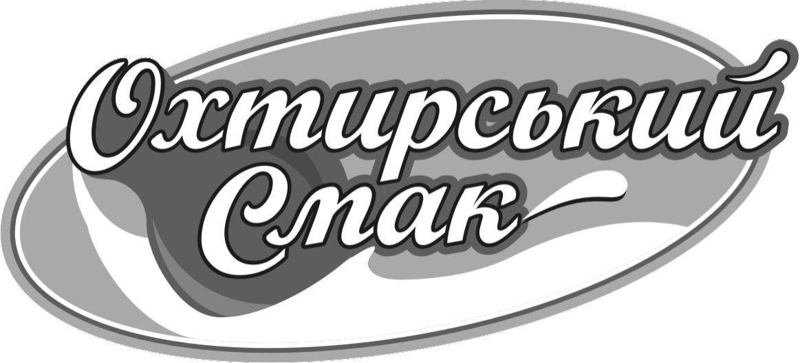

Наші торговельні марки

Славія
Основна торгова марка компанії, що представляє молочну продукцію найвищої якості.
×
Славна і Ко
Марка "Славна і Ко" об’єднує традиції та сучасні технології виробництва молочної продукції. Вона відома натуральністю та високими стандартами якості.

Сири Бурлука
Лінійка екологічних продуктів без ГМО та штучних домішок.
×
Сири Бурлука
Сири Бурлука — це продукція для тих, хто цінує натуральність та екологічність. Виробництво відповідає міжнародним стандартам ISO та HACCP.

Охтирський смак
Продукти, створені за класичними рецептами з використанням натуральних інгредієнтів.